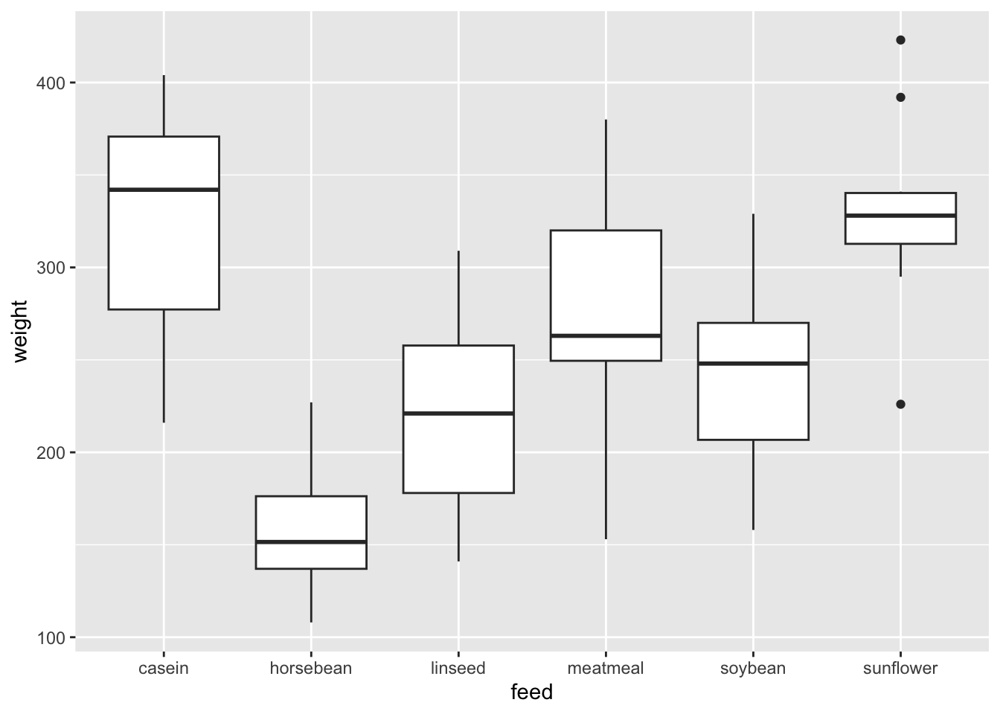
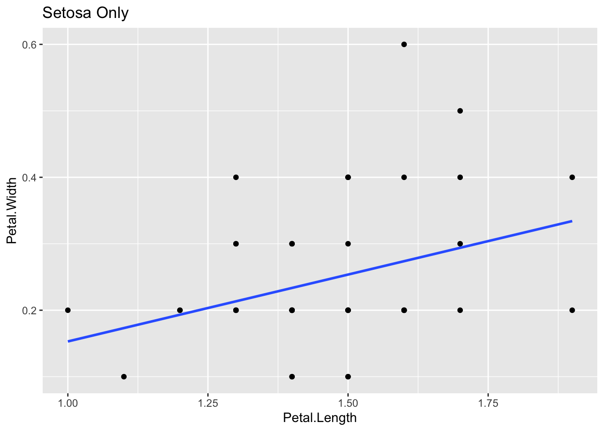
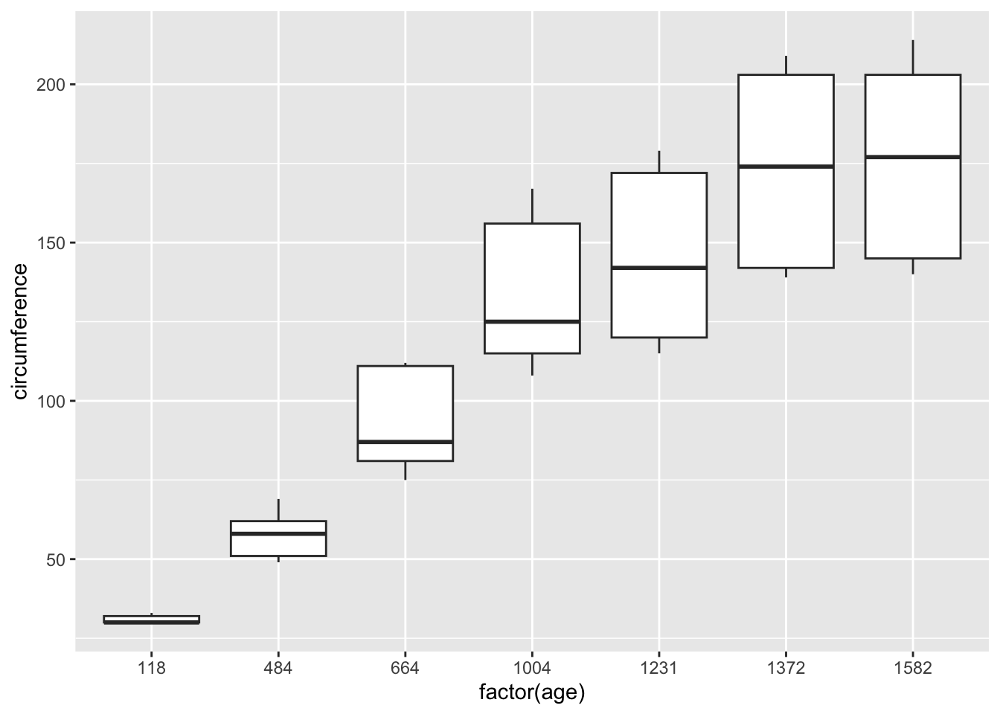

Chapter 3 Exploratory Data Analysis (EDA) 2
Course Contents
- 2021-12-08: Introduction: About the course
- An introduction to open and public data, and data science - 2021-12-15: Exploratory Data Analysis (EDA) 1 [lead by hs]
- R Basics with RStudio and/or RStudio.cloud; R Script, swirl - 2021-12-22: Exploratory Data Analysis (EDA) 2 [lead by hs]
- R Markdown; Introduction totidyverse; RStudio Primers - 2022-01-12: Exploratory Data Analysis (EDA) 3 [lead by hs]
- Introduction totidyverse; Public Data, WDI, etc - 2022-01-19: Exploratory Data Analysis (EDA) 4 [lead by hs]
- Introduction totidyverse; WDI, UN, WHO, etc - 2022-01-26: Exploratory Data Analysis (EDA) 5 [lead by hs]
- Introduction totidyverse; WDI, OECD, US gov, etc - 2022-02-02: Inference Statistics 1
- 2022-02-09: Inference Statistics 2
- 2022-02-16: Inference Statistics 3
- 2022-02-23: Project Presentation
EDA and Data Visualization
- Communication in the EDA Cycle
- Data Visualization in the EDA Cycle
- Tidyverse Package centered at
ggplot2
- Tidyverse Package centered at

Contents of EDA2
- Reproducible Research
- Literate Programming
- R Markdown
- R Notebook
- Formats
- HTML
- MS Word
- Presentation
- and more
- Practicum I: R Markdown and R Notebook
- Introduction to
tidyversepackageggplot2- ggplot(), aes(), geoms, etc.
- Practicum II:
tidyverse,ggplot2on R Notebook - Learning Resources: RStuido Primers, etc.
3.1 Part I: R Markdown for Communication
3.1.1 Records of EDA and Communication
- Memo on scratch paper: R Scripts
- Record on a notebook: R Notebook (a type of an R Markdown format)
- Short paper or a digital communication: R Notebook
- Paper or a report: R Markdown (html, pdf, or MS Word)
- Presentation
- R Markdown with a presentation format (html, pdf, or PowerPoint)
- Publication of a Book
- BOOKDOWN: Write HTML, PDF, ePub, and Kindle books with R Markdown. Free online document is provided in pdf as well
- Arxive Page
3.1.2 What is R Markdown Notebook
R Markdown provides an authoring framework for data science. You can use a single R Markdown file to both
- save and execute code
- generate high quality reports that can be shared with an audience
R Notebooks are an implementation of Literate Programming that allows for direct interaction with R while producing a reproducible document with publication-quality output.
An R Notebook is an R Markdown document with chunks that can be executed independently and interactively, with output visible immediately beneath the input.
(Reference: R Markdown: The Definitive Guide, 3.2 Notebook)
3.1.3 R Studio Setup
- Start R Studio
- Create a Project
- Tool > Install Packages
rmarkdown- Or on Console:
install.packages("rmarkdown")
- Or on Console:
- Tool > Install Packages
tinytex(for pdf generation) - Let’s try!
- File > New File > R Notebook
- Save with a file name, say, test-notebook
- Preview by [Preview] button
- Run Code Chunk
plot(cars)and then Preview again. - Knit PDF, Word (and HTML)
Note: R Notebooks are relatively new feature of RStudio and are only available in version 1.0 or higher of RStudio.
3.1.4 Default YAML: R Notebook, HTML, PDF, WORD
---
title: "The Title of This R Notebook"
author: "Your Name"
date: "2021-12-22"
output:
html_notebook: default
html_document: default
word_document: default
pdf_document: default
---- Original format is
output: html_document - Indention matters in YAML. So it is safer to copy and paste
output:topdf_document: default - R Notebook is also an HTML format, so html_notebook part may disappear after knitting in HTML.
3.1.5 An Example of R Notebooks
Moodle: QALL401 2021W 2021-12-22 Examples of R Notebook
Open the file
- R Codes with Outputs
- Headings, Links, Explanations, etc.
- [Hide] button, and [Code] button with a menu
- Choose: Download Rmd
Save as “file_name.nb.html” in your R project directory
Download and Save “jhu_covid.Rmd”. (Or, open the file in editor)
Preview by [Preview] button.
Knit to other formats, e.g. Word under [Preview] button
N.B. If Step 4 does not work, create a new R Notebook and copy and paste [R Markdown Source File] in Moodle
3.1.6 Knit, Notebook Mode and Preview of Default.Rmd
- Knit to HTML
- Knit to PDF (require system, install
tinytexpackage) - Knit to Word
- Controlling a code chunk and its output
- Highlight and run
- Run all chunks above
- Expand, collapse and clear output
- Show output in other window
- Modify chunk options
- Output Options:
- Notebook, HTML, PDF, Word
- General, Figures and Advanced
3.1.7 yaml - YAML Ain’t a Markup Language - Example
---
title: "File Name --Subtitle--"
author: "My Name"
date: "2021/12/22"
output:
html_notebook:
number_sections: yes
toc: yes
toc_float: yes
word_document:
fig_caption: yes
fig_height: 5
fig_width: 6
# reference_docx: word-styles-reference-01.docx
---3.1.8 R Markdown: Quick References (See Moodle)
- R Studio Help (menu bar) > Markdown Quick Reference
- R Studio Help (menu bar) > Cheat Sheet
- R Markdown Cheat Sheet
- R Markdown Reference Guide
- R Markdown: The Definitive Guide by Yihui Xie, J. J. Allaire, Garrett Grolemund
- In Textbook: R for Data Science: Communicate
- Markdown: R Markdown is based on the Markdown language of Pandoc
- Pandoc’s Markdown: Detailed Information
- Markdown Tutorials: Interactive Practicum
- DARING FIREBALL: Markdown (detailed explanation and editor as Dingus)
3.1.9 Markdown Language – or use WYSIWYG editor
- Headers: #, ##, ###, ####
- Lists: 1. 2. , *
- Links: linked phrase
- Images:
 - Block quotes” > (block)
- equations: e.g.
$\frac{a}{b}$for \(\frac{a}{b}\) - Horizontal rules: Three or more asterisks or dashes (*** or - - - )
- Tables
- Footnotes
- Bibliographies and Citations
- Slide breaks
- Italicized text by
_italic_, Bold text by**bold** - Superscripts, Subscripts, Strikethrough text
3.1.10 MS Word: Happy collaboration with Rmd to docx
- Use R Markdown to create a Word document
- Save as: ``word-styles-reference-01.docx’’
- Edit the Word styles
- Edit the styles of the file ``word-styles-reference-01.docx’’ .
- Save this document as your style reference docx file
- Format an Rmd report using the styles reference docx file
---
title: "Test Report"
author: "Your Name"
date: "January 6, 2021"
output:
word_document:
reference_docx: word-styles-reference-01.docx
---3.1.11 Why R Markdown?
3.1.11.1 R Markdown Cheat Sheet
- .Rmd files:
An R Markdown (.Rmd) file is a record of your research. It contains
- the code that a scientist needs to reproduce your work along with
- the narration that a reader needs to understand your work.
- Reproducible Research: At the click of a button, or the type of a command, you can rerun the code in an R Markdown file to Rmd reproduce your work and export the results as a finished report.
- Dynamic Documents: You can choose to export the finished report as a html, nb.html, pdf, MS Word, ODT, RTF, or markdown document; or as a html or pdf based slide show.
3.1.12 Literate Programming by D. Knuth
Literate programming is an approach to programming introduced by Donald Knuth in which a program is given as an explanation of the program logic in a natural language, such as English, interspersed with snippets of macros and traditional source code, from which a compilable source code can be generated
3.1.12.1 D. Knuth
Let us change our traditional attitude to the construction of programs: Instead of imagining that our main task is to instruct a computer what to do, let us concentrate rather on explaining to human beings what we want a computer to do.
3.1.13 Reproducible Research - Quote from a Coursera Course
3.1.13.1 Reproducible Research
Reproducible research is the idea that data analyses, and more generally, scientific claims, are published with their data and software code so that others may verify the findings and build upon them. The need for reproducibility is increasing dramatically as data analyses become more complex, involving larger datasets and more sophisticated computations. Reproducibility allows for people to focus on the actual content of a data analysis, rather than on superficial details reported in a written summary. In addition, reproducibility makes an analysis more useful to others because the data and code that actually conducted the analysis are available.
3.1.14 R Markdown workflow, R for Data Science
R Markdown is also important because it so tightly integrates prose and code. This makes it a great analysis notebook because it lets you develop code and record your thoughts. It:
Records what you did and why you did it. Regardless of how great your memory is, if you don’t record what you do, there will come a time when you have forgotten important details. Write them down so you don’t forget!
Supports rigorous thinking. You are more likely to come up with a strong analysis if you record your thoughts as you go, and continue to reflect on them. This also saves you time when you eventually write up your analysis to share with others.
Helps others understand your work. It is rare to do data analysis by yourself, and you’ll often be working as part of a team. A lab notebook helps you share why you did it with your colleagues or lab mates.
3.1.14.1 Examples of yaml
---
title: "R Notebook"
output: html_notebook
---3.1.14.1.5 Edit the word file file_show.docx to create my-styles.docx, e.g., a4-my-styles.docx changed the paper size to A4 from US letter.
---
title: "A Study of Cases of Coronavirus Pandemic"
author: "Hiroshi Suzuki"
date: "2021/12/22"
output:
html_notebook:
number_sections: yes
toc: yes
toc_float: yes
pdf_document:
toc: true
number_sections: true
word_document:
reference_docx: a4-my-styles.docx
---
3.1.15 Learning Resources, EDA2-1
Textbook: R for Data Science, Part V Communicate
R Markdown: The Definitive Guide by Yihui Xie, J. J. Allaire, Garrett Grolemund [Last Revised: 2020-12-14]
BOOKDOWN: Write HTML, PDF, ePub, and Kindle books with R Markdown. Free online document is provided in pdf as well
RMarkdown for Scientists by Nicholas Tierney [Last Revised: 2020-09-09]
Report Writing for Data Science in R by Roger Peng
Social Science Computing Cooperative at the University of Wisconsin
- R for Researchers: R Markdown [Last Revised: 2015-04-16]
3.1.16 Practicum: R Markdown and R Notebook
- Install
rmarkdown,tinytex,tidyverse(andtimetk) - Try RMarkdown: HTML, PDF, Word
- Try R Notebook:
- Code Chunk
- RStudio Help
- Visual Editor
- Download from Moodle
- Export and import files
- file name.nb.html and file name.Rmd
- YAML
- Shared link to RStudio.cloud: https://moodle3.icu.ac.jp/mod/url/view.php?id=185785
NB. Sys.setenv(LANG = "en")
3.2 Part II: Data Visualization and Tidyverse Package
3.2.1 Introduction to tidyverse R Packages
- CRAN: https://cran.r-project.org > Packages (menu)
- Contributed Packages
- Currently, the CRAN package repository features 16850 available packages.
- RStudio:
- Tidyverse: https://www.tidyverse.org
- Install
tidyverse- install.packages(“tidyverse”)
- RStudio Menu: Tools > Install Packages >
tidyverse
- Attaching
tidyverselibrary(tidyverse)
- The following packages are attached automatically:
ggplot2,tibble,tidyr,readr,purrr,dplyr,stringr,forcats
- Install
3.2.2 ggplot2 Overview
ggplot2 is a system for declaratively creating graphics, based on The Grammar of Graphics. You provide the data, tell ggplot2 how to map variables to aesthetics, what graphical primitives to use, and it takes care of the details.
Examples
ggplot(data = mpg) +
geom_point(mapping = aes(x = displ, y = hwy))ggplot(data = mpg) +
geom_boxplot(mapping = aes(x = class, y = hwy))Template
ggplot(data = <DATA>) +
<GEOM_FUNCTION>(mapping = aes(<MAPPINGS>))3.2.3 Practicum: ggplot2 on R Notebook
library(tidyverse)carsandiris
df_cars <- cars,df_iris <- iris
geom_point,geom_line,geom_histogram,goem_boxplotaes(),color = ()facet_wrap(vars())- Examples in Moodle
3.2.5 RStudio Primers created by learnr
3.2.5.1 RStudio Primers https://rstudio.cloud/learn/primers
- The Basics – r4ds: Explore, I
- Programming Basics: Try this first!
- Visualization Basics
- Work with Data – r4ds: Wrangle, I
- Working with Tibbles
- Isolating Data with dplyr
- Deriving Information with dplyr
- Visualize Data – r4ds: Explore, II
- Tidy Your Data – r4ds: Wrangle, II
- Iterate – r4ds: Program
- Write Functions – r4ds: Program
- Report Reproductively – r4ds: Communicate
- Build Interactive Web Apps – r4ds: Communicate
3.2.6 Learning Resources, EDA2-2
https://rstudio.com/resources/webinars/a-gentle-introduction-to-tidy-statistics-in-r/
Textbook: R for Data Science, Part I Explore
RStuio Primers: See References in Moodle at the bottom
Stackoverflow https://stackoverflow.com
- For non-English system users:
- Set
Sys.setenv(LANGUAGE = "en"): It is helpful for searching information on the internet when you get an error.
- Set
- For non-English system users:
Books:
- R Cookbook, 2nd Edition, James (JD) Long and Paul Teetor: https://rc2e.com
- Fundamentals of Data Visualization, by Claus O. Wilke: https://clauswilke.com/dataviz/index.html
3.3 The Week Three Assignment (in Moodle)
Pick two data from the built-in dataset. (
library(help = "datasets")or go to the site The R Datasets Package)- One of them can be
irisbut do not choosecarsorAirPassengers. ggplot2examples ofcars,irisandAirPassengersare given below.
- One of them can be
Create an R Notebook of a Data Analysis containing the following and submit the rendered HTML file (file name.nb.html):
- title, date, and author, i.e., Your Name
- an explanation of the data and the variables
- at least one code chunk containing the following:
head(),str()
- for each dataset, at least one code chunk containing graphs using ggplot2. Please try at least two
geoms:
geom_hist(),geom_boxplot(),goem_col(), etc.geom_line(),geom_point(), etc.
- your findings and/or questions
- file name: ID.nb.html, e.g. 123456.nb.html
- option:
median(),mean(),sd()of a quantitative (numeric) variable,cor()of two quantitative (numeric) variables (or a correlation table)
Submit your R Notebook file to Moodle (The Third Assignment) by 2021-01-11 23:59:00
3.3.1 Note on R Notebook
Please note the following.
- There are essentially three modes: R Scripts, R Notebook and R Markdown.
- R Notebook is a special type of R Markdown but please use R Notebook at least for Suzuki’s assignments.
- To start, choose R Notebook from New File in the File Menu. If you started with R Markdown, please switch it with the Preview button hidden under the triangle on the right of the knit button.
- The file we preview has the name file name.nb.html. For example if the original file name is a3_12345.Rmd, then a3_12345.nb.html is created. You can check it using Files tab.
- When you preview R Notebook, on the top right, you can find Code button. If you press it you also can find download Rmd, which is the source of R Notebook you edited. In this way we can share both the outputs and the source.
- One difficulty is that you cannot include the outputs of the code chunk in the preview.
- Check Preview on Save and/or save the file before preview, i.e., pressing the preview button.
- Select Run all under Run button. Then all outputs apear on your editor and all outputs will appear in your preview.
- If some of your code chunks have problems, run each code chunk from top to bottom so that all outputs appear in your editor or viewer.
- When you share your R Notebook, do not forget to share file name.nb.html.
- If you have a file name.nb.html, then find it from Files in R Studio, you can automatically create file name.Rmd to edit the source.
- To create a fancy document with R Notebook, see the Markdown Quick Reference under Help on top menu for the editor. If you are using Visual Editor using A bottun on top left pane, see https://rstudio.github.io/visual-markdown-editing/.
- R Studio introduced Visual Editor last year. It seems to be stable but it is not perfect to go back and forth from the original editor using tags. I always use the original editor and I am confident on all the functions of it but I do not have much experience on Visual Editor.
3.3.2 Set up
We will use ggplot2 package which is a part of tidyverse package.
# install.packages("tidyverse") # only once
library(tidyverse) ## ── Attaching packages ─────────────────────────────────────────────── tidyverse 1.3.2 ──
## ✔ ggplot2 3.3.6 ✔ purrr 0.3.4
## ✔ tibble 3.1.8 ✔ dplyr 1.0.10
## ✔ tidyr 1.2.1 ✔ stringr 1.4.1
## ✔ readr 2.1.2 ✔ forcats 0.5.2
## ── Conflicts ────────────────────────────────────────────────── tidyverse_conflicts() ──
## ✖ dplyr::filter() masks stats::filter()
## ✖ dplyr::lag() masks stats::lag()3.3.3 Data cars
We will study the data cars in an R package datasets.
Name: Speed and Stopping Distances of Cars
Description: The data give the speed of cars and the distances taken to stop. Note that the data were recorded in the 1920s.
Source:
- The data give the speed of cars and the distances taken to stop. Note that the data were recorded in the 1920s.
References
- McNeil, D. R. (1977) Interactive Data Analysis. Wiley.
data(cars) # to refresh data, it is better to start with this.
df_cars <- cars # You can use cars as is, but it is safer to assign it to other name
head(df_cars)## speed dist
## 1 4 2
## 2 4 10
## 3 7 4
## 4 7 22
## 5 8 16
## 6 9 10str(df_cars)## 'data.frame': 50 obs. of 2 variables:
## $ speed: num 4 4 7 7 8 9 10 10 10 11 ...
## $ dist : num 2 10 4 22 16 10 18 26 34 17 ...3.3.3.2 Data Visualization by ggplot2
3.3.3.2.1 Scatter Plot by geom_point()
ggplot(df_cars) +
geom_point(aes(x = speed, y = dist)) +
labs(x = "speed (mph)", y = "dist (ft)", title = "Speed and Stopping Distances of Cars")Observation 1
- Roughly the
distis proportional to thespeed.
cor(df_cars)## speed dist
## speed 1.0000000 0.8068949
## dist 0.8068949 1.0000000The correlation is 0.806. So we say strongly correlated.
In the following, since the mapping
aes()are the same for two geoms, we can place it inggplot(). We will study linear regression in Week 6 and on.
ggplot(df_cars, aes(x = speed, y = dist)) +
geom_point() +
geom_smooth(method = "lm", se = FALSE) +
labs(x = "speed (mph)", y = "dist (ft)", title = "Speed and Stopping Distances of Cars")## `geom_smooth()` using formula 'y ~ x'
summary(lm(df_cars$dist ~ df_cars$speed))##
## Call:
## lm(formula = df_cars$dist ~ df_cars$speed)
##
## Residuals:
## Min 1Q Median 3Q Max
## -29.069 -9.525 -2.272 9.215 43.201
##
## Coefficients:
## Estimate Std. Error t value Pr(>|t|)
## (Intercept) -17.5791 6.7584 -2.601 0.0123 *
## df_cars$speed 3.9324 0.4155 9.464 1.49e-12 ***
## ---
## Signif. codes: 0 '***' 0.001 '**' 0.01 '*' 0.05 '.' 0.1 ' ' 1
##
## Residual standard error: 15.38 on 48 degrees of freedom
## Multiple R-squared: 0.6511, Adjusted R-squared: 0.6438
## F-statistic: 89.57 on 1 and 48 DF, p-value: 1.49e-123.3.3.2.2 Histograms by geom_histogram()
ggplot(df_cars) +
geom_histogram(aes(x = speed)) +
labs(title = "Histogram of speed")## `stat_bin()` using `bins = 30`. Pick better value with `binwidth`.
ggplot(df_cars) +
geom_histogram(aes(x = speed), binwidth = 1) +
labs(title = "Histogram of speed")
ggplot(df_cars) +
geom_histogram(aes(x = dist)) +
labs(title = "Histogram of speed")## `stat_bin()` using `bins = 30`. Pick better value with `binwidth`.
ggplot(df_cars) +
geom_histogram(aes(x = dist), binwidth = 1) +
labs(title = "Histogram of speed")
3.3.4 Data iris
We will study the data iris in an R package datasets.
Description: This famous (Fisher’s or Anderson’s) iris data set gives the measurements in centimeters of the variables sepal length and width and petal length and width, respectively, for 50 flowers from each of 3 species of iris. The species are Iris setosa, versicolor, and virginica.
Source:
- Fisher, R. A. (1936) The use of multiple measurements in taxonomic problems. Annals of Eugenics, 7, Part II, 179–188.
- The data were collected by Anderson, Edgar (1935). The irises of the Gaspe Peninsula, Bulletin of the American Iris Society, 59, 2–5.
data(iris) # to refresh data, it is better to start with this.
df_iris <- iris # You can use iris as is, but it is safer to assign it to other name
head(df_iris)## Sepal.Length Sepal.Width Petal.Length Petal.Width Species
## 1 5.1 3.5 1.4 0.2 setosa
## 2 4.9 3.0 1.4 0.2 setosa
## 3 4.7 3.2 1.3 0.2 setosa
## 4 4.6 3.1 1.5 0.2 setosa
## 5 5.0 3.6 1.4 0.2 setosa
## 6 5.4 3.9 1.7 0.4 setosastr(df_iris)## 'data.frame': 150 obs. of 5 variables:
## $ Sepal.Length: num 5.1 4.9 4.7 4.6 5 5.4 4.6 5 4.4 4.9 ...
## $ Sepal.Width : num 3.5 3 3.2 3.1 3.6 3.9 3.4 3.4 2.9 3.1 ...
## $ Petal.Length: num 1.4 1.4 1.3 1.5 1.4 1.7 1.4 1.5 1.4 1.5 ...
## $ Petal.Width : num 0.2 0.2 0.2 0.2 0.2 0.4 0.3 0.2 0.2 0.1 ...
## $ Species : Factor w/ 3 levels "setosa","versicolor",..: 1 1 1 1 1 1 1 1 1 1 ...unique(df_iris$Species)## [1] setosa versicolor virginica
## Levels: setosa versicolor virginica3.3.4.1 Observations on Data Structure
- There are five variables: Sepal.Length, Sepal.Width, Petal.Length, Petal.Width and Species
- First four variables are numeric, and the fifth is a character vector in factor
- Species have three levels corresponding to three kinds of iris: setosa versicolor virginica
3.3.4.2 Data Analysis of Each Variable, i.e., Univariate Analysis
- For
geom_histogramthe default ofstatis “bin” for continuous data. Setstat = "count", and adjust the bins by the number of bins, i.e.binsoption with 30 for default orbiwidthoption that overrides bins.
ggplot(df_iris) +
geom_histogram(aes(x = Sepal.Length)) +
labs(title = "Histogram of Sepal.Length")## `stat_bin()` using `bins = 30`. Pick better value with `binwidth`.
ggplot(df_iris) +
geom_histogram(aes(x = Sepal.Length), bins = 10) +
labs(title = "Histogram of Sepal.Length")
ggplot(df_iris) +
geom_histogram(aes(x = Sepal.Length), binwidth = 0.1) +
labs(title = "Histogram of Sepal.Length")
The previous graph is similar to the next.
ggplot(df_iris) +
geom_histogram(aes(x = Sepal.Length), stat = "count") +
labs(title = "Histogram of Sepal.Length")## Warning: Ignoring unknown parameters: binwidth, bins, pad
ggplot(df_iris) +
geom_histogram(aes(x = Sepal.Length, fill = Species), stat = "count") +
labs(title = "Histogram of Sepal.Length")## Warning: Ignoring unknown parameters: binwidth, bins, pad
ggplot(df_iris) +
geom_histogram(aes(x = Sepal.Length, fill = Species), binwidth = 0.1) +
labs(title = "Histogram of Sepal.Length")
ggplot(df_iris) +
geom_boxplot(aes(x = Species, y = Sepal.Length)) +
labs(title = "Boxplot of Sepal.Lenght")
ggplot(df_iris) +
geom_boxplot(aes(x = Species, y = Sepal.Width)) +
labs(title = "Boxplot of Sepal.Width")ggplot(df_iris) +
geom_boxplot(aes(x = Species, y = Petal.Length)) +
labs(title = "Boxplot of Petal.Length")
ggplot(df_iris) +
geom_boxplot(aes(x = Species, y = Petal.Width)) +
labs(title = "Boxplot of Petal.Width")3.3.4.3 Data Analysis of Two Variables, i.e., Multivariate Analysis
The following is a simple scatter plot. However, from the univariate analysis, it is clear that Species are key factors.
ggplot(df_iris) +
geom_point(aes(x = Sepal.Length, y = Sepal.Width))
ggplot(df_iris) +
geom_point(aes(x = Sepal.Length, y = Sepal.Width, color = Species))
ggplot(df_iris) +
geom_point(aes(x = Sepal.Length, y = Sepal.Width)) +
facet_wrap(vars(Species))
Let us check the correlation matrix
cor(df_iris[,1:4])## Sepal.Length Sepal.Width Petal.Length Petal.Width
## Sepal.Length 1.0000000 -0.1175698 0.8717538 0.8179411
## Sepal.Width -0.1175698 1.0000000 -0.4284401 -0.3661259
## Petal.Length 0.8717538 -0.4284401 1.0000000 0.9628654
## Petal.Width 0.8179411 -0.3661259 0.9628654 1.0000000Petal.Length and Petal.Width have very strong positive correlation, and so are Sepal.Length and Petal.Length. Sepal.Width and Petal.Length have weak negative correlation, and so are Sepal.Width and Petal.Width.
ggplot(df_iris) +
geom_point(aes(x = Petal.Length, y = Petal.Width, color = Species))
ggplot(df_iris) +
geom_point(aes(x = Petal.Length, y = Petal.Width)) +
facet_wrap(vars(Species))
ggplot(df_iris) +
geom_point(aes(x = Sepal.Length, y = Petal.Length, color = Species))
ggplot(df_iris) +
geom_point(aes(x = Sepal.Length, y = Petal.Length)) +
facet_wrap(vars(Species))
ggplot(df_iris) +
geom_point(aes(x = Sepal.Width, y = Petal.Length, color = Species))
ggplot(df_iris) +
geom_point(aes(x = Sepal.Width, y = Petal.Length)) +
facet_wrap(vars(Species))
ggplot(df_iris) +
geom_point(aes(x = Sepal.Width, y = Petal.Width, color = Species))
ggplot(df_iris) +
geom_point(aes(x = Sepal.Width, y = Petal.Width)) +
facet_wrap(vars(Species))
As we have seen above the situation is more complicated.
- Observation: Altogether
Sepal.WidthandPetal.Widthhave a negative correlation. However, if we look at the graph for each, they seem to have a positive correlation.
In statistics we say that the Species is the confounder.
3.3.5 Data AirPassengers
Next, we look at the data AirPassengers in an R package datasets.
Description: The classic Box & Jenkins airline data. Monthly totals of international airline passengers, 1949 to 1960.
Source:
- Box, G. E. P., Jenkins, G. M. and Reinsel, G. C. (1976) Time Series Analysis, Forecasting and Control. Third Edition. Holden-Day. Series G.
data(AirPassengers) # to refresh data, it is better to start with this.
df_AirPassengers <- AirPassengers # You can use iris as is, but it is safer to assign it to other name
head(df_AirPassengers)## [1] 112 118 132 129 121 135str(df_AirPassengers)## Time-Series [1:144] from 1949 to 1961: 112 118 132 129 121 135 148 148 136 119 ...This is a time series data, a special data format of Base R.
plot(df_AirPassengers)
We can handle this type of data using tidyverse but now it is easier to use the following package.
timetkPackage https://CRAN.R-project.org/package=timetk
# install.packages("timetk") # run this line or install `timetk` from Install Packages in Tool
library(timetk)
df_ap <- tk_tbl(df_AirPassengers)
df_ap## # A tibble: 144 × 2
## index value
## <yearmon> <dbl>
## 1 1 1949 112
## 2 2 1949 118
## 3 3 1949 132
## 4 4 1949 129
## 5 5 1949 121
## 6 6 1949 135
## 7 7 1949 148
## 8 8 1949 148
## 9 9 1949 136
## 10 10 1949 119
## # … with 134 more rowsggplot(df_ap) +
geom_line(aes(x = index, y = value)) +
labs(title = "Line Graph of AirPassengers")
- Observation: There is a seasonal pattern.
ggplot(df_ap) +
geom_histogram(aes(x = value)) +
labs(title = "Histogram of AirPassengers")## `stat_bin()` using `bins = 30`. Pick better value with `binwidth`.
3.3.6 Recommended Study Plan
- Review the class note, slides and/or videos
- RStudio Primers: Programming Basics, and Visualization Basics
- Review this note
- Look at The R Datasets Package) or in Console,
library(help = "datasets")and use Help to check each data in the built-in datasets. - Try this assignment
- Study the chapters 1-8 under Explore in the textbook.
3.4 Responses to the Week Three Assignment
3.4.1 Setup
We load two packages; datasets and ggplot2. The datasets are loaded automatically and you do not need the first line of the followiong code chunk. But it is safer to include it because some data names are used previously for different purposes.
library(datasets)
library(ggplot2)For explanation, we use the following population data of WDI.
library(WDI)
pop <- WDI(
country = c("NG", "BD", "RU", "MX", "JP"),
indicator = c(population = "SP.POP.TOTL"),
start = 1960, end = 2020)
head(pop)## iso2c country population year
## 1 BD Bangladesh 164689383 2020
## 2 BD Bangladesh 163046173 2019
## 3 BD Bangladesh 161376713 2018
## 4 BD Bangladesh 159685421 2017
## 5 BD Bangladesh 157977151 2016
## 6 BD Bangladesh 156256287 20153.4.2 Visualization of Two Variables
iris_df <- irisstr(iris_df)## 'data.frame': 150 obs. of 5 variables:
## $ Sepal.Length: num 5.1 4.9 4.7 4.6 5 5.4 4.6 5 4.4 4.9 ...
## $ Sepal.Width : num 3.5 3 3.2 3.1 3.6 3.9 3.4 3.4 2.9 3.1 ...
## $ Petal.Length: num 1.4 1.4 1.3 1.5 1.4 1.7 1.4 1.5 1.4 1.5 ...
## $ Petal.Width : num 0.2 0.2 0.2 0.2 0.2 0.4 0.3 0.2 0.2 0.1 ...
## $ Species : Factor w/ 3 levels "setosa","versicolor",..: 1 1 1 1 1 1 1 1 1 1 ...head(iris_df)## Sepal.Length Sepal.Width Petal.Length Petal.Width Species
## 1 5.1 3.5 1.4 0.2 setosa
## 2 4.9 3.0 1.4 0.2 setosa
## 3 4.7 3.2 1.3 0.2 setosa
## 4 4.6 3.1 1.5 0.2 setosa
## 5 5.0 3.6 1.4 0.2 setosa
## 6 5.4 3.9 1.7 0.4 setosaLet us look at two plots, one with geom_point() and the other with geom_line()
ggplot(iris_df) +
geom_point(mapping = aes(x=Petal.Length, y=Petal.Width))
ggplot(iris_df) +
geom_line(mapping = aes(x=Petal.Length, y=Petal.Width))
The line graph is not appropriate. Can you see why?
By help(geom_line) or Help tab with
geom_linein the search window, we get the following:geom_line()connects them in order of the variable on the x axis.In this case lines are meaningless especially the vertical lines.
ggplot(iris_df) +
geom_point(mapping = aes(x=Petal.Length, y=Petal.Width, color = Species))
ggplot(iris_df) +
geom_line(mapping = aes(x=Petal.Length, y=Petal.Width, color = Species))
- It is good to add colors for Species in
geom_point, however,geom_lineis not appropriate in this case.
Let us look at the population data of WDI.
ggplot(pop) +
geom_point(mapping = aes(x=year, y=population))
This is OK.
ggplot(pop) +
geom_line(mapping = aes(x=year, y=population))
We have a similar problem with geom_line(). However,
ggplot(pop) +
geom_line(mapping = aes(x=year, y=population, color = country))
This looks just fine. In this case geom_line() with color aestic is better than geom_point() above.
If you have two numerical data, it is safer to use geom_point() first and decide to choose a better option. It is not easy to decide whether the lines between the points are meaningful or not. Please think carefully what you want to communicate. In some cases, you may want to choose the following. Note that I moved the aes() to ggplot() as it is common to both geom_line() and geom_point().
ggplot(pop, mapping = aes(x=year, y=population, color = country)) +
geom_line() +
geom_point()
See other examples
df_tg <- ToothGrowth
head(df_tg)## len supp dose
## 1 4.2 VC 0.5
## 2 11.5 VC 0.5
## 3 7.3 VC 0.5
## 4 5.8 VC 0.5
## 5 6.4 VC 0.5
## 6 10.0 VC 0.5str(df_tg)## 'data.frame': 60 obs. of 3 variables:
## $ len : num 4.2 11.5 7.3 5.8 6.4 10 11.2 11.2 5.2 7 ...
## $ supp: Factor w/ 2 levels "OJ","VC": 2 2 2 2 2 2 2 2 2 2 ...
## $ dose: num 0.5 0.5 0.5 0.5 0.5 0.5 0.5 0.5 0.5 0.5 ...ggplot(df_tg) +
geom_point(aes(x = dose, y = len, color = supp))
ggplot(df_tg) +
geom_boxplot(aes(x = factor(dose), y = len)) +
facet_wrap(vars(supp))
3.4.3 Visualization of One Variable
df_chickwts <- chickwts
df_chickwts## weight feed
## 1 179 horsebean
## 2 160 horsebean
## 3 136 horsebean
## 4 227 horsebean
## 5 217 horsebean
## 6 168 horsebean
## 7 108 horsebean
## 8 124 horsebean
## 9 143 horsebean
## 10 140 horsebean
## 11 309 linseed
## 12 229 linseed
## 13 181 linseed
## 14 141 linseed
## 15 260 linseed
## 16 203 linseed
## 17 148 linseed
## 18 169 linseed
## 19 213 linseed
## 20 257 linseed
## 21 244 linseed
## 22 271 linseed
## 23 243 soybean
## 24 230 soybean
## 25 248 soybean
## 26 327 soybean
## 27 329 soybean
## 28 250 soybean
## 29 193 soybean
## 30 271 soybean
## 31 316 soybean
## 32 267 soybean
## 33 199 soybean
## 34 171 soybean
## 35 158 soybean
## 36 248 soybean
## 37 423 sunflower
## 38 340 sunflower
## 39 392 sunflower
## 40 339 sunflower
## 41 341 sunflower
## 42 226 sunflower
## 43 320 sunflower
## 44 295 sunflower
## 45 334 sunflower
## 46 322 sunflower
## 47 297 sunflower
## 48 318 sunflower
## 49 325 meatmeal
## 50 257 meatmeal
## 51 303 meatmeal
## 52 315 meatmeal
## 53 380 meatmeal
## 54 153 meatmeal
## 55 263 meatmeal
## 56 242 meatmeal
## 57 206 meatmeal
## 58 344 meatmeal
## 59 258 meatmeal
## 60 368 casein
## 61 390 casein
## 62 379 casein
## 63 260 casein
## 64 404 casein
## 65 318 casein
## 66 352 casein
## 67 359 casein
## 68 216 casein
## 69 222 casein
## 70 283 casein
## 71 332 caseinggplot(df_chickwts) +
geom_point(aes(x = feed, y = weight))
ggplot(df_chickwts) +
geom_boxplot(aes(x = feed, y = weight))
Since there are two variables, you can use
geom_point(). However, one of them is a categorical variable andbox_plot()works better, I believe.It is called a box and whiskers plot (in the style of Turkey). Please look at Help.
- The boxplot compactly displays the distribution of a continuous variable. It visualises five summary statistics (the median, two hinges and two whiskers), and all “outlying” points individually.
- See also https://ggplot2.tidyverse.org/reference/geom_boxplot.html.
The other popular visualization is
geom_histogram(). Please tryfillandcoloroptions to see the difference.
ggplot(df_chickwts) +
geom_histogram(aes(x = weight, fill = feed))## `stat_bin()` using `bins = 30`. Pick better value with `binwidth`.
ggplot(df_chickwts) +
geom_freqpoly(aes(x = weight, color = feed))## `stat_bin()` using `bins = 30`. Pick better value with `binwidth`.
ggplot(df_chickwts) +
geom_histogram(aes(x = weight), bins = 10) +
facet_wrap(vars(feed))
- Which one do you like best? There are many options. Again, it depends on what you want to communicate.
# `rivers` is a numeric vector, so changed into a dataframe.
df_riv <- data.frame(length = rivers) # it is safer to assign it to other name
head(df_riv)## length
## 1 735
## 2 320
## 3 325
## 4 392
## 5 524
## 6 450Since there is no meaning in ordering, geom_histogram() may be an appropriate choice.
ggplot(df_riv, aes(length)) +
geom_histogram()## `stat_bin()` using `bins = 30`. Pick better value with `binwidth`.
3.4.4 More Examples
3.4.4.1 Weight versus age of chicks on different diets
Description: The ChickWeight data frame has 578 rows and 4 columns from an experiment on the effect of diet on early growth of chicks.
Format: An object of class c(“nfnGroupedData”, “nfGroupedData”, “groupedData”, “data.frame”) containing the following columns:
weight: a numeric vector giving the body weight of the chick (gm).
Time: a numeric vector giving the number of days since birth when the measurement was made.
Chick: an ordered factor with levels 18 < … < 48 giving a unique identifier for the chick. The ordering of the levels groups chicks on the same diet together and orders them according to their final weight (lightest to heaviest) within diet.
Diet: a factor with levels 1, …, 4 indicating which experimental diet the chick received.
Details: The body weights of the chicks were measured at birth and every second day thereafter until day 20. They were also measured on day 21. There were four groups on chicks on different protein diets.
df_chickweight <- ChickWeight
head(df_chickweight)## Grouped Data: weight ~ Time | Chick
## weight Time Chick Diet
## 1 42 0 1 1
## 2 51 2 1 1
## 3 59 4 1 1
## 4 64 6 1 1
## 5 76 8 1 1
## 6 93 10 1 1str(df_chickweight)## Classes 'nfnGroupedData', 'nfGroupedData', 'groupedData' and 'data.frame': 578 obs. of 4 variables:
## $ weight: num 42 51 59 64 76 93 106 125 149 171 ...
## $ Time : num 0 2 4 6 8 10 12 14 16 18 ...
## $ Chick : Ord.factor w/ 50 levels "18"<"16"<"15"<..: 15 15 15 15 15 15 15 15 15 15 ...
## $ Diet : Factor w/ 4 levels "1","2","3","4": 1 1 1 1 1 1 1 1 1 1 ...
## - attr(*, "formula")=Class 'formula' language weight ~ Time | Chick
## .. ..- attr(*, ".Environment")=<environment: R_EmptyEnv>
## - attr(*, "outer")=Class 'formula' language ~Diet
## .. ..- attr(*, ".Environment")=<environment: R_EmptyEnv>
## - attr(*, "labels")=List of 2
## ..$ x: chr "Time"
## ..$ y: chr "Body weight"
## - attr(*, "units")=List of 2
## ..$ x: chr "(days)"
## ..$ y: chr "(gm)"summary(df_chickweight)## weight Time Chick Diet
## Min. : 35.0 Min. : 0.00 13 : 12 1:220
## 1st Qu.: 63.0 1st Qu.: 4.00 9 : 12 2:120
## Median :103.0 Median :10.00 20 : 12 3:120
## Mean :121.8 Mean :10.72 10 : 12 4:118
## 3rd Qu.:163.8 3rd Qu.:16.00 17 : 12
## Max. :373.0 Max. :21.00 19 : 12
## (Other):506ggplot(df_chickweight) +
geom_point(aes(x = Time, y = weight, color = Diet))
If we use dplyr(), we can summarize the mean, i.e., average weight in each category.
library(dplyr)
df_chickweight %>% group_by(Diet, Time) %>% summarize(wt = mean(weight)) %>%
ggplot() +
geom_line(aes(x = Time, y = wt, color = Diet))## `summarise()` has grouped output by 'Diet'. You can override using the `.groups`
## argument.
If we use geom_smooth(), we can plot the smoothed conditional means. See https://ggplot2.tidyverse.org/reference/geom_smooth.html.
ggplot(df_chickweight) +
geom_smooth(aes(x = Time, y = weight, color = Diet))## `geom_smooth()` using method = 'loess' and formula 'y ~ x'
3.4.4.2 Carbon Dioxide Uptake in Grass Plants
Description: The CO2 data frame has 84 rows and 5 columns of data from an experiment on the cold tolerance of the grass species Echinochloa crus-galli.
Usage: CO2
Format: An object of class c(“nfnGroupedData”, “nfGroupedData”, “groupedData”, “data.frame”) containing the following columns:
Plant an ordered factor with levels Qn1 < Qn2 < Qn3 < … < Mc1 giving a unique identifier for each plant.
Type a factor with levels Quebec Mississippi giving the origin of the plant
Treatment a factor with levels nonchilled chilled
conc a numeric vector of ambient carbon dioxide concentrations (mL/L).
uptake a numeric vector of carbon dioxide uptake rates (umol/m^2 sec).
Details The CO2 uptake of six plants from Quebec and six plants from Mississippi was measured at several levels of ambient CO2 concentration. Half the plants of each type were chilled overnight before the experiment was conducted.
df_CO2 <- CO2
head(df_CO2)## Grouped Data: uptake ~ conc | Plant
## Plant Type Treatment conc uptake
## 1 Qn1 Quebec nonchilled 95 16.0
## 2 Qn1 Quebec nonchilled 175 30.4
## 3 Qn1 Quebec nonchilled 250 34.8
## 4 Qn1 Quebec nonchilled 350 37.2
## 5 Qn1 Quebec nonchilled 500 35.3
## 6 Qn1 Quebec nonchilled 675 39.2str(df_CO2)## Classes 'nfnGroupedData', 'nfGroupedData', 'groupedData' and 'data.frame': 84 obs. of 5 variables:
## $ Plant : Ord.factor w/ 12 levels "Qn1"<"Qn2"<"Qn3"<..: 1 1 1 1 1 1 1 2 2 2 ...
## $ Type : Factor w/ 2 levels "Quebec","Mississippi": 1 1 1 1 1 1 1 1 1 1 ...
## $ Treatment: Factor w/ 2 levels "nonchilled","chilled": 1 1 1 1 1 1 1 1 1 1 ...
## $ conc : num 95 175 250 350 500 675 1000 95 175 250 ...
## $ uptake : num 16 30.4 34.8 37.2 35.3 39.2 39.7 13.6 27.3 37.1 ...
## - attr(*, "formula")=Class 'formula' language uptake ~ conc | Plant
## .. ..- attr(*, ".Environment")=<environment: R_EmptyEnv>
## - attr(*, "outer")=Class 'formula' language ~Treatment * Type
## .. ..- attr(*, ".Environment")=<environment: R_EmptyEnv>
## - attr(*, "labels")=List of 2
## ..$ x: chr "Ambient carbon dioxide concentration"
## ..$ y: chr "CO2 uptake rate"
## - attr(*, "units")=List of 2
## ..$ x: chr "(uL/L)"
## ..$ y: chr "(umol/m^2 s)"summary(df_CO2)## Plant Type Treatment conc uptake
## Qn1 : 7 Quebec :42 nonchilled:42 Min. : 95 Min. : 7.70
## Qn2 : 7 Mississippi:42 chilled :42 1st Qu.: 175 1st Qu.:17.90
## Qn3 : 7 Median : 350 Median :28.30
## Qc1 : 7 Mean : 435 Mean :27.21
## Qc3 : 7 3rd Qu.: 675 3rd Qu.:37.12
## Qc2 : 7 Max. :1000 Max. :45.50
## (Other):42ggplot(df_CO2) +
geom_point(aes(x = conc, y = uptake, color = Type)) +
facet_wrap(vars(Treatment))
ggplot(df_CO2) +
geom_smooth(aes(x = conc, y = uptake, color = Type)) +
facet_wrap(vars(Treatment))## `geom_smooth()` using method = 'loess' and formula 'y ~ x'
3.4.4.3 Growth of Orange Trees
Description: The Orange data frame has 35 rows and 3 columns of records of the growth of orange trees.
Usage: Orange
Format: An object of class c(“nfnGroupedData”, “nfGroupedData”, “groupedData”, “data.frame”) containing the following columns:
Tree an ordered factor indicating the tree on which the measurement is made. The ordering is according to increasing maximum diameter.
age a numeric vector giving the age of the tree (days since 1968/12/31)
circumference a numeric vector of trunk circumferences (mm). This is probably “circumference at breast height”, a standard measurement in forestry.
Details: This dataset was originally part of package nlme, and that has methods (including for [, as.data.frame, plot and print) for its grouped-data classes.
df_orange <- Orange
head(df_orange)## Grouped Data: circumference ~ age | Tree
## Tree age circumference
## 1 1 118 30
## 2 1 484 58
## 3 1 664 87
## 4 1 1004 115
## 5 1 1231 120
## 6 1 1372 142str(df_orange)## Classes 'nfnGroupedData', 'nfGroupedData', 'groupedData' and 'data.frame': 35 obs. of 3 variables:
## $ Tree : Ord.factor w/ 5 levels "3"<"1"<"5"<"2"<..: 2 2 2 2 2 2 2 4 4 4 ...
## $ age : num 118 484 664 1004 1231 ...
## $ circumference: num 30 58 87 115 120 142 145 33 69 111 ...
## - attr(*, "formula")=Class 'formula' language circumference ~ age | Tree
## .. ..- attr(*, ".Environment")=<environment: R_EmptyEnv>
## - attr(*, "labels")=List of 2
## ..$ x: chr "Time since December 31, 1968"
## ..$ y: chr "Trunk circumference"
## - attr(*, "units")=List of 2
## ..$ x: chr "(days)"
## ..$ y: chr "(mm)"summary(df_orange)## Tree age circumference
## 3:7 Min. : 118.0 Min. : 30.0
## 1:7 1st Qu.: 484.0 1st Qu.: 65.5
## 5:7 Median :1004.0 Median :115.0
## 2:7 Mean : 922.1 Mean :115.9
## 4:7 3rd Qu.:1372.0 3rd Qu.:161.5
## Max. :1582.0 Max. :214.0ggplot(df_orange) +
geom_point(aes(x = age, y = circumference, color = Tree))
ggplot(df_orange) +
geom_boxplot(aes(x = factor(age), y = circumference))
ggplot(df_orange) +
geom_smooth(aes(x = age, y = circumference))## `geom_smooth()` using method = 'loess' and formula 'y ~ x'